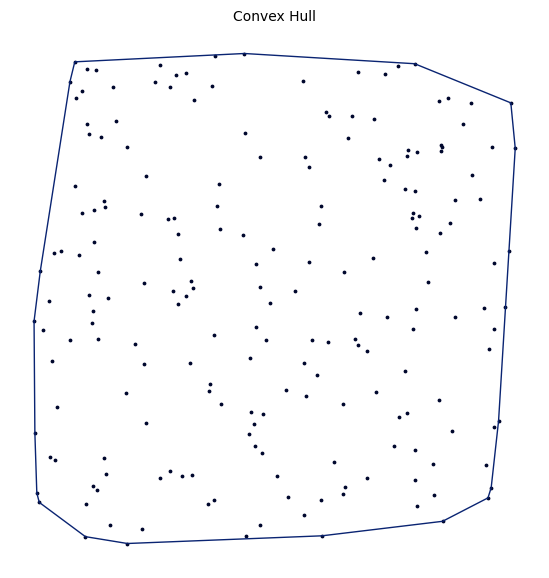

Convex Hull#
Constructs the convex hull of a point set.
The convex hull is the smallest convex polygon containing all points. The graph consists of the boundary edges.
Constructor#
Convex_Hull(setpoints)
Parameters:
setpoints (SetPoints): The set of points (must be in \(\mathbb{R}^d\) where \(d \geq 2\)).
Mathematical Definition:#
The convex hull \(\text{conv}(P)\) of a point set \(P \subset \mathbb{R}^d\) is:
The convex hull graph contains edges \((p_i, p_j)\) if they form part of the boundary \(\partial \text{conv}(P)\).
For 2D points, the convex hull is a polygon with vertices ordered counterclockwise. The number of edges equals the number of hull vertices.
Properties:
Forms a simple cycle in 2D
All vertices on the hull have degree 2 in 2D
Number of edges = number of hull vertices (typically \(\ll n\))
Can be computed in \(O(n \log n)\) time
Value Errors:
Raises
QhullErrorif fewer than \(d + 1\) points are providedRaises
QhullErrorif all points are collinear in \(d > 2\) dimensions
Example#
from proximitygraphs.points import SetPoints
from proximitygraphs.proximitygraphs import Convex_Hull
import numpy as np
# Create points with some interior points
points = SetPoints.uniform_square(n=100, seed=42)
# Compute convex hull
hull = Convex_Hull(points)
hull_vertices = hull.vertices()
print(f"Total points: {points.n}")
print(f"Hull vertices: {hull_vertices.n}")
print(f"Hull edges: {hull.m}")
# Output: Total points: 100, Hull vertices: 8, Hull edges: 8
# Verify: all hull vertices have degree 2
degrees = hull.graph.degree()
print(f"All degrees are 2: {all(d == 2 for d in degrees if d > 0)}")
# Visualize
hull.draw(figsize=(8, 8), e_color='red', e_size=2)
Method: vertices()#
Returns the vertices forming the convex hull.
Returns:
SetPoints: A SetPoints object containing only hull vertices.
Mathematical Definition:
Returns the subset \(V_h \subset P\) where:
In 2D, these are vertices with degree 2 in the hull graph.
Value Errors:
No errors (works on any constructed convex hull)
Example:#
from proximitygraphs.points import SetPoints
from proximitygraphs.proximitygraphs import Convex_Hull
# Create random points
points = SetPoints.uniform_square(n=100, seed=123)
# Get convex hull
hull = Convex_Hull(points)
hull_verts = hull.vertices()
# Verify subset relationship
print(f"Hull vertices are subset of points: {hull_verts.n <= points.n}")
# Output: True
# Compare perimeter to interior
perimeter_points = hull_verts.n
interior_points = points.n - perimeter_points
print(f"Perimeter: {perimeter_points}, Interior: {interior_points}")
Example#
import proximitygraphs as pg
pts = pg.SetPoints.uniform_square(n=200, seed=42)
G = pg.Convex_Hull(pts)
G.draw(figsize=(7, 7), details=True)
